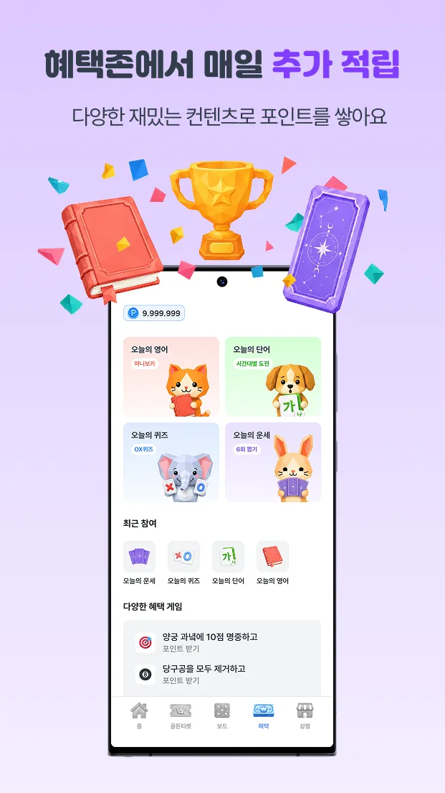
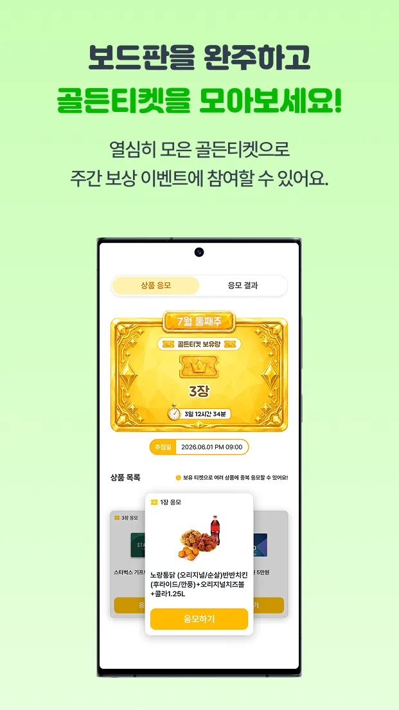
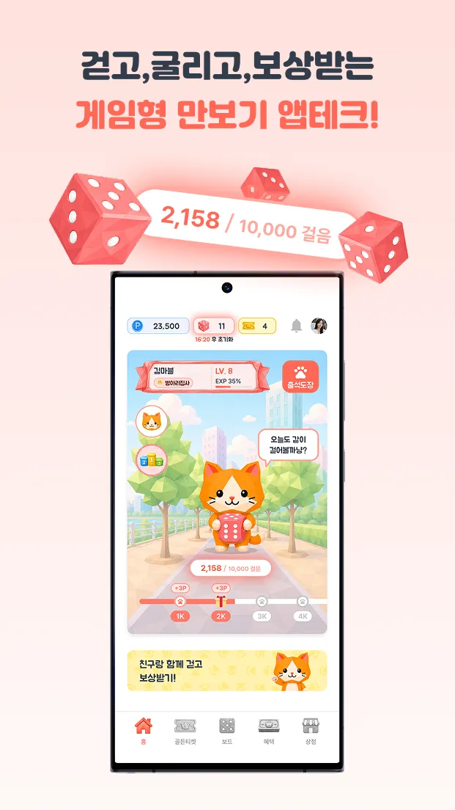
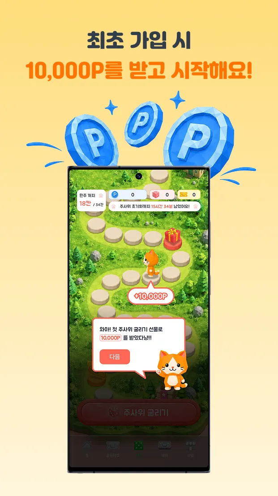
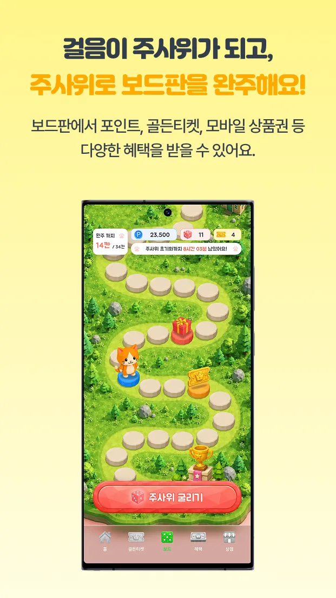

마블워크
걷기 보상 앱 · Google Play · App Store · 원스토어
걸음 수로 주사위를 얻어 보드를 도는 앱입니다. 서버 · 앱 · 어드민 · 인프라를 설계하고 개발해 세 스토어에 출시했습니다. 출시 뒤에도 초대 링크 추천인 자동 연결, 유입 매체별 가입 보상, 광고 퍼널 추적 같은 기능을 계속 개발하면서 운영과 장애 대응을 함께 맡고 있습니다.
- NestJS
- TypeORM
- Aurora PostgreSQL
- Valkey
- SQS
- Flutter
- Riverpod
- Next.js
- AWS
- Grafana





스토어에 공개된 화면
322
API 엔드포인트
25
큐 기반 배치 작업
18
알림 규칙 · 대시보드 9
111
어드민 E2E 케이스
적립 경로
같은 거래 ID로 두 번 들어와도 적립은 한 번입니다.
- 서명 확인ECDSA · HMAC
- 멱등 처리거래 ID · UNIQUE
- 행 잠금pessimistic write
- 한도 확인일일 · 월간
- 원장 기록append-only
광고 · 오퍼월 · 기프티콘 교환 어디서 들어오든 같은 검증을 거칩니다. 잔액 하한은 애플리케이션이 아니라 DB 제약이 지킵니다.
CHECK ("reward_points" >= 0)
배포 파이프라인
마이그레이션은 전용 단계에서 한 번만 돌리고, 승인은 두 번 받습니다.
- 소스main 병합
- 승인 ①소스 확인승인
- 빌드maincmsworker
- 마이그레이션전용 단계 · 1회 · 잠금
- 승인 ②빌드 결과 확인승인
- 배포상용 반영
AWS 인프라를 CloudFormation으로 코드화하고, CodePipeline에 마이그레이션 단계와 수동 승인 2회를 두었습니다. 관측은 Grafana · Loki · Mimir · Tempo로 직접 구성했습니다.
장애 대응
보상 광고 응답률 복구
광고 완료 검증보다 지급 요청이 먼저 가던 순서 문제를 클라이언트 대기 게이트와 서버 보정 배치로 풀었습니다.
오퍼월 콜백 위조 경로 차단
조작할 수 있는 헤더 대신 실제 접속 주소로 판정하게 바꾸고, 진짜 콜백까지 막던 주소 비교 오류도 함께 고쳤습니다.
Android 크래시 루프 차단
권한 없이 포그라운드 서비스를 띄워 죽고 되살아나던 루프를 끊고, 판정 로직을 테스트로 고정했습니다.
해외판같은 인프라와 배포 절차를 다시 써서 해외판을 별도 저장소로 구축했습니다. 2026.07부터 진행 중입니다.